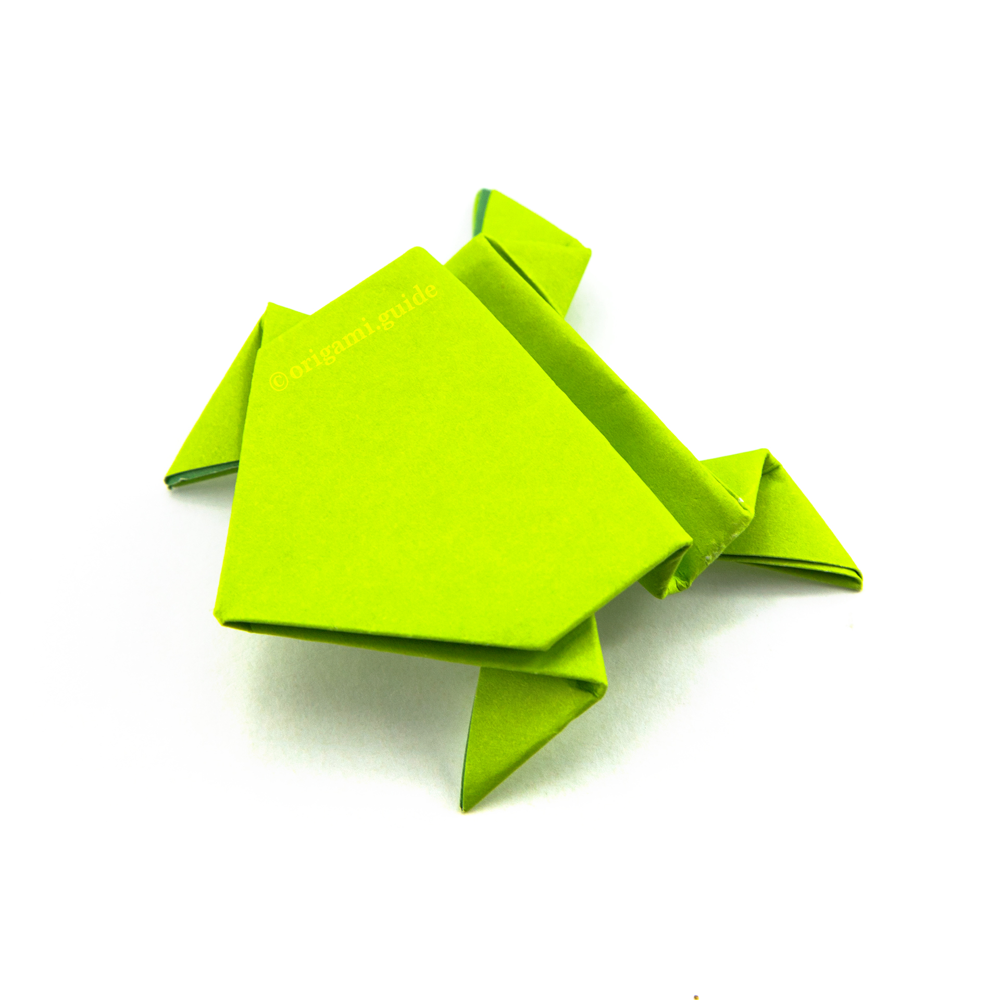
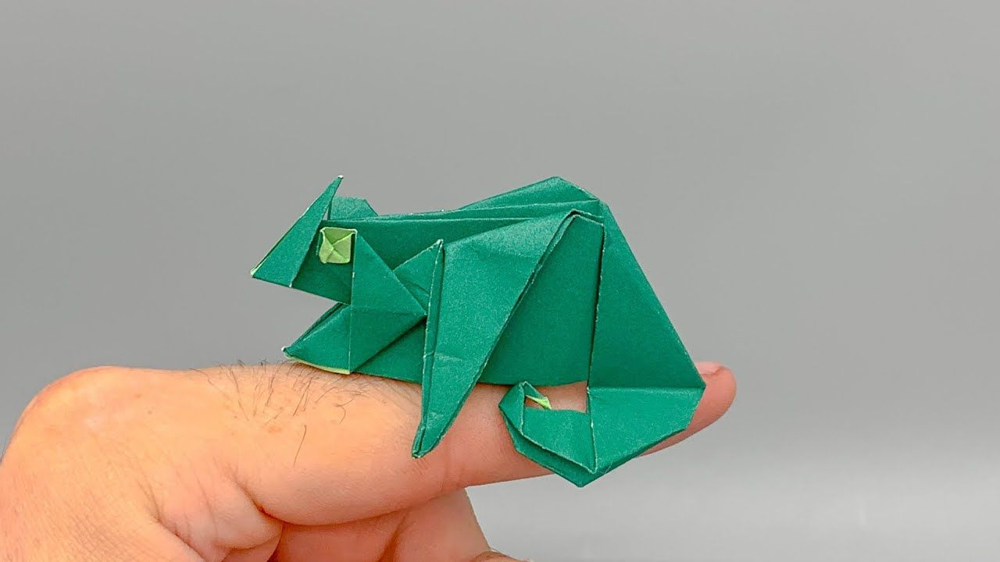

Origami dragon
- A dragon has none to four legs, claws, scales and possibly spikes.
- wings.
- dragon has special powers.

Origami Frog
- There are over 5,000 species of frog.
- Frogs don't need to drink water as they absorb it through their skin.
- Some frogs can jump over 20 times their own body length; that is like a human jumping 30m.

Origami Camel
- are two types of camels: One humped or “dromedary” camels and two humped Bactrian camels.
- have three sets of eyelids and two rows of eyelashes to keep sand out of their eyes.
- Camels have thick lips which let them forage for thorny plants other animals can't eat.

Origami chameleon
- Chameleons have long sticky tongues that they can fire out in a fraction of a second.
- They stretch up to twice their body size.
- Their eyes can move independently.
- The largest species is about 1.5 feet when fully grown.